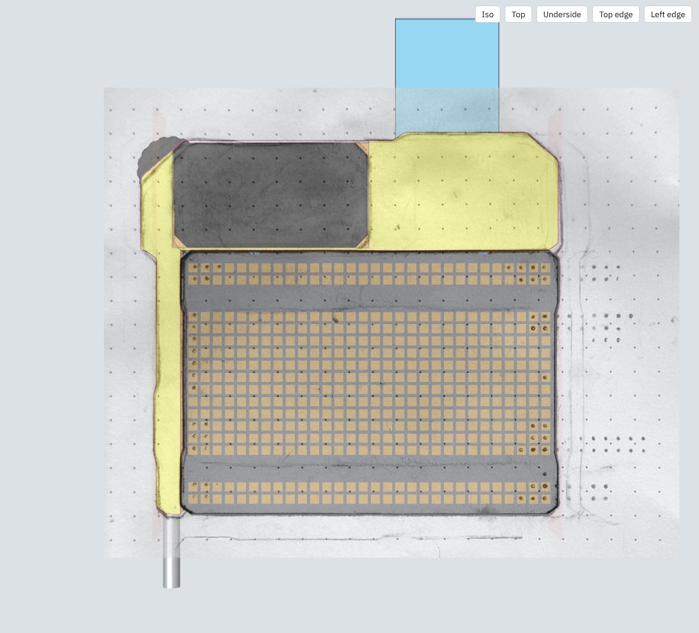
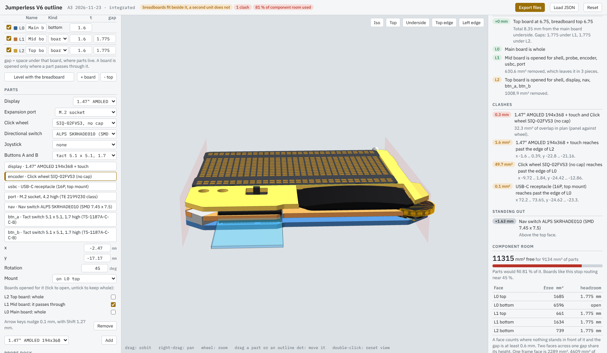

V6 board outline and stack
The readme of JumperlessV6/v6mech, rev A5 2026-11-24. Kevin Cappuccio with Claude.
- Open the 3D viewer
- Download the folder (.zip, 8.4 MB): parameters, source, KiCad and DXF outlines, STEP


One parameter file describes the whole mechanical stack. A browser page shows it in 3D and lets you change it; the same code writes a KiCad board and a DXF per board, and a script turns it into a STEP assembly. Made 2026-11-23; rev A2 the same day (outline traced from the notebook page, boards spaced with parts between them); rev A3 the same day (input parts to choose from, and a per-board switch for what each part opens); rev A4 the same day (a 7.62 mm strip, the Wiiig face board on the shell, the page remembers everything between reloads, the parts and options from the other V6 design notes, a painted and lit 3D view, and the routing lab's console look); rev A5 on 2026-11-24 (panels that resize, fold and dock; scrolling moves the view and pinching zooms it; the inside corner follows the breadboard's chamfer; the top-left block slopes in with no flat under it; the wig's top board has no card edge; straightening the left side can be put back).
Use it
- Open
V6_outline_viewer.html(double-click; it needs no server and no network). - Drag parts in the 3D view. Tick Edit the outline to drag the outline's vertices, and Lay the notebook sketch over it to see the pencil drawing under the outline. Checks are on the right. Export files gives every file as text to copy or download.
- Under Parts, pick a click wheel, directional switch, joystick or buttons. Select any part to move it, change the board it sits on, and tick which boards are opened for it.
- To make your changes the defaults: export "Parameters", save it over
v6_outline.json, thennode build.mjs. That rewritesout/and the viewer. - For Fusion:
pip install cadquery, thenpython3 step_export.pywritesout/<variant>/V6_stack_<variant>.step.
v6_outline.json can also be edited by hand; every dimension has a name, and keys starting with _
are comments.
What the page remembers
The design, every view setting, which sections are folded and where the camera stands are written to the browser's own storage a quarter of a second after anything changes, and again when the page is left. A reload brings all of it back. Nothing is sent anywhere, so a different browser or machine starts from the built-in design.
- Undo / Redo (the buttons, or Ctrl/Cmd + Z and Shift + Ctrl/Cmd + Z): 80 steps, since the page was opened.
- Saved designs → Save a copy keeps a named copy in the same storage; Open and Delete are beside each.
- Copy code gives the design as a short text (only what differs from the built-in design); Copy link
puts that code after
#p=in the page's address where the page is on a web server. Paste either, or the JSON of av6_outline.json, into the box and press Open. Opening a link keeps the design you had as "before the link". - A design saved by an older page is brought up to the current one: your outline, stack and parts are kept, new settings start at their defaults, and a line at the top of the panel says so.
- Reset goes back to the built-in design; Undo brings yours back.
If the browser refuses storage (some private windows, some embedded frames), the page says so at the top of the Design panel, and Copy code or Export is the way to keep a design.
Layout, and moving the view
- Resize: drag the line between a panel and the view. Double-click it for the usual size; with the line focused, the arrow keys move it (Shift for bigger steps).
- Fold: the mark at the end of a panel's bar, or a click on its name. A folded panel is only its bar.
- Dock: the three small pictures in a panel's bar put it on the left, under the view, or on the right. Two panels in one dock share it, with a line between them to drag.
- Layout (top right) has five arrangements, View only (also the
\key), text size, fold or unfold all the Design sections, and Usual layout to go back. All of it is remembered. - In the view: drag turns it, scrolling moves it, a pinch (or Ctrl/Cmd + scroll) zooms about the pointer, right-drag moves it too. With a mouse, View → Scrolling → Zooms gives the wheel its old job.
The wig's two boards
The wig is a sandwich: a top board with the countersunk holes, the shell with its clips, and a bottom board with the card edge (the tongue with the 2 × 35 holes of the 1.27 mm header) along its top.
- Top board (
wig.face): the 484 countersunk holes read fromV6pile/Wig/Wiig/wiigtop.3mfbytools/prep_face.py(2.032 at the top face, 1.2 through: a 90° countersink 0.416 deep; 480 on the 16 × 30 grid and four at the ends of the row beside each rail pair), on the breadboard body's own outline, 78.74 × 54.99, 0.71 thick.wiigtop.3mfitself also has the 3.43 mm card-edge strip with the 70 holes along its top; rev A4 drew that on the top board, which was wrong. It is trimmed;header_strip: trueputs it back. - Bottom board: with a removable wig it is the wig's own PCB (WigLEDmag outline, tongue included, with the header on it), under the shell and under the frame's upper boards. With an integrated wig it is the main board itself, and there is no card edge.
- It sits → On the shell adds the top board's thickness: the top of the breadboard is 7.46 and the unit is 9.06 thick. Let into it shortens the shell instead and the top stays at the shell height.
- Level with the shell / with the face set the gaps so the frame's top board is flush with either.
- The STEP export cuts the real countersunk holes; the KiCad and DXF files are still the frame boards only.
How it is drawn
View → Drawn as picks one of four: Real (soldermask, bare FR4 edges, plated holes, gold, a lit room to reflect, shadows, tone mapping), Flat (one colour per board, as before), X-ray and Lines. Backdrop, bench (shadow, a 0.1 inch grid that lines up with the holes, or nothing), lens, exposure, where the light comes from, and a slow turn are beside it; Save the picture writes a PNG, with a clear background when the backdrop is None. Look sets the soldermask of the boards and of the face board, silkscreen, copper finish, the shell's colour, LEDs under the holes and whether the display is lit. None of that changes the geometry or any exported file.
From the other V6 notes
- Left strip 7.62 (3 pitches; unit pitch 86.36, 4 dead rows). Outline → Make the left side straight
pulls the top-left block in to the strip edge and keeps the outline as drawn under
frame.outline_drawn; Put it back as drawn restores it (Undo does too). - Edge coupler between units (edge-coupler notes, v1 and v2): the WingTAT HEE70LP03BK used today needs about 6.4 mm between the two boards, the kiss slot V2 9.2 and V3 7.8. The check compares that with the strip width, and the housing is drawn in the gap when the next unit is shown. 7.62 is the first strip that takes the WingTAT part; the kiss slot V2 needs 10.16.
- Display: the fifteen candidates from the display library that are shorter than the unit, each with the module size and thickness from its drawing, beside the two modelled 1.47 inch ones.
- Expansion port: M.2, PCIe x1, two SFP cages, and from the port survey a mini PCIe socket and a DDR4 SO-DIMM socket.
- Add part → Chips and tall parts: CH446Q, CH32H417, RP2350B, TSSOP-16, the 6.3 mm inductor, the FPC connector. Mechanical: an M2 screw with a spacer in every gap, as one answer to what holds the boards apart.
- Magnetometer layout: the WigLEDmag's own sensors, or the planned MMC5603 grid (3 × 6 or 4 × 8, spread evenly over the 76 × 45 hole field). The docked-probe check uses whichever is chosen.
- Shell height 6.75 or 7.1 at a click.
Frame of reference
- x right, y down (KiCad). x = 0 is the wig's left edge, y = 0 the wig body's top edge. Breadboard column k is at x = 2.54 × k (k = 1..30).
- z = 0 is the top face of the main board, which is also the wig PCB's top face. z is up.
The outline
frame.outline is a list of vertices, clockwise from the top-left corner, traced from the notebook page
(photo a384f12f, warped so the drawn breadboard's corners land on the WigLEDmag's; read to about ±0.5 mm).
Each vertex can carry a corner:
| In the JSON | Corner |
|---|---|
| nothing | sharp |
"r": 2 |
round |
"c": [cx, cy], "r": 2 |
rounded chamfer: a chamfer with both ends blended. cx is the leg along the more horizontal edge, cy along the more vertical one |
"c": "wig" |
the WigLEDmag corner itself (2.51 × 2.11), copied point for point from its Edge.Cuts |
The WigLEDmag corner is a 2.21 × 1.58 chamfer with 1.0 mm blends; the bigger corners use the same construction with bigger numbers.
Where the drawing and a hard reference disagree by less than the pencil's width, the reference wins: the strip's edge is on x = −5.08 (drawn −4.8 to −5.0), the band's right edge on x = 78.74 (drawn 79.0 to 79.3), the strip's end on the breadboard's bottom edge (drawn 0.5 lower). Everything else is as drawn, including the 1.7 mm step in the top edge at x ≈ 45 and the 0.5 mm bump on the strip's outer edge.
In integrated mode the bottom board is this outline plus the breadboard's own outline as one piece; the
seam along the strip is filled, and frame.fill_notches closes the notch at the top-right if wanted.
The 0.1 inch rule
- Unit pitch = (31 + n) × 2.54, n =
grid.dead_rows_left(0, 1 or 2): the strip's width in rows. Two units side by side then have n + 1 dead rows between column 30 of one and column 1 of the next. - The check places a neighbour one unit pitch away on each side and looks for overlap in plan: a bare breadboard (the WigLEDmag outline), and a second whole unit. Edges that just touch are fine.
- A 1×40 header from column 1 puts pins 31 to 31 + n on dead rows and the rest in the next unit's holes. Turn on "Show the next unit" and "Show a 1x40 header" to see it.
How the stack is built
stacklists the boards bottom to top, each with its thickness and the gap under it. Parts live in the gaps. The default is three 1.6 mm boards with 1.775 mm between them, which puts the top board flush with the breadboard at 6.75. "Level with the breadboard" shares the space out again after a change.- The bottom board is the main board. In
removablemode it is the frame alone and the wig is its own PCB (the real WigLEDmag outline) on a 2×35 1.27 mm right-angle header and socket, both on the top faces, so the mated pair is inside the sandwich. - Openings are automatic, and only where needed. Each part has bodies with a plan shape and a height range. A board is cut only where a body passes through it. The probe lies between the bottom and top boards, so only a board in between is opened for it. A part that has to be reached from outside (a button, a flat nav pad) also opens the boards above it, with a hole the size of its actuator.
- Every part can overrule that, board by board.
"open": { "L2": true }on a part opens that board for it even though it stops short;falsekeeps the board whole even though the part runs into it, and the check then says so. In the viewer these are the tick boxes under a selected part. - Kind
ringturns a board into a hollow spacer withframe.ring_wallof wall. None in the default stack. featuresin the JSON adds manual cuts or tabs.
Controls
The input parts in the catalogue, with where each lands in the default stack (main board top at 0, mid board 1.775 to 3.375, top board 5.15 to 6.75). "Top" is the part's highest point against the top face.
| Part | Size | Put on | Top | Boards opened |
|---|---|---|---|---|
| Click wheel SIQ-02FVS3, no cap (default) | base 10.3 × 11.1 × 2.0, wheel Ø14.5 from 2.0 to 4.0 | main | 2.75 below | mid; the top board covers it |
| same, top board opened by hand | main | 2.75 below | mid, top (Ø15 well) | |
| same, on the mid board | mid | 0.63 above | top | |
| Click wheel with the V5 cap | cap top at 5.75 | main | 1.0 below | mid, top |
| Nav stick ALPS RKJXM1015004 (through-hole, the bench part) | 11 × 11 × 6.6, lever Ø2.2 to 15 | main | lever 8.25 above; body 0.15 below | mid, top (11 × 11) |
| Nav switch ALPS SKRHADE010 (SMD) | 7.45 × 7.5 × 1.85, stem to 5.0 | mid | stem 1.63 above | top (the body reaches 0.075 into it) |
| same, on the main board | main | 1.75 below | mid; top for access (Ø6.3) | |
| Nav pad Hroparts K1-1210UN-01 (SMD, flat) | 9.9 × 9.9 × 1.7 | mid | 1.68 below | top for access (Ø8.4) |
| same, on the top board | top | 1.7 above | none | |
| Tact 5.1 × 5.1, 1.7 high (TS-1187A-C-C-B) | mid | 1.68 below | top for access (Ø4.0) | |
| same, on the top board | top | 1.7 above | none | |
| Thumbstick, Joy-Con type (Adafruit 5628) | can 17.9 × 19.9 × 5.25, cap Ø15 to 13.7 | main | cap 6.93 above | mid, top |
| Custom control | body w × d × h, actuator Ø and top height, typed in | main | as typed | as it falls |
Sources are in src/catalog.js beside each part. The SKRHADE010 and K1-1210UN footprints are already in
JumperlessFootprints; the RKJXM has no footprint yet (B25 says so too).
Checks
| Check | What it tells you |
|---|---|
| 0.1 inch stacking | pitch on grid; a bare breadboard on either side; a second whole unit on either side; the pitch at which two units clear |
| Stack height | top board against breadboard top; which boards are opened, for what, and whether that leaves them in pieces |
| Clashes | parts that share space (plan overlap × height overlap); a part that runs into a board it was told not to open; parts that reach past the edge of their board |
| Standing out | how far each part stands above the top face |
| Component room | per board face, the area with nothing standing in front of it, against the 9,134 mm² of main-board courtyard from docs/V6_area.json |
| Probe dock | that it stays between the outer boards; wall left in a cut board; the docked magnet's field at the nearest magnetometer; whether a dead-row pin line runs down the channel |
node build.mjs --check exits 1 if two parts clash, a part runs into a board kept whole, or a bare
breadboard no longer fits beside the unit.
What rev A5 shows
- Inside corner. The frame's inside corner copies the breadboard's own corner (2.51 × 2.11, the same points), so the mid and top boards close up to the shell there, less the fit gap.
- Top-left block. It now slopes in to the strip along the corner chamfer of a breadboard standing on the left (2.211 × 1.583, r 1.0), carried on in a straight line to the block's left edge at x = −8.3, with no flat under the block. On the sketch the drawn slope is steeper by about 5° and within 0.5 mm of this line.
- With the wig's top board on the shell the unit is 9.06 mm thick and the breadboard's top is 0.71 above the frame's top board.
- At a 7.62 strip (pitch 86.36) a bare breadboard still fits on either side. With the left side made straight, two whole units overlap by 37 mm², all of it the click wheel, which hangs 4.6 mm past the corner; they clear at pitch 91.44.
- Today's WingTAT coupler fits a 7.62 strip with 1.22 mm to spare and does not fit 5.08. The check takes the strip as empty space: on this outline the strip is board, and the coupler's tongue is not drawn.
Everything under rev A3 still holds:
- The outline lies on the pencil lines to about half a millimetre (turn the sketch on to see it).
- A bare breadboard fits against either side at pitch 83.82 = 33 × 2.54, 3 dead rows. The step under the top-left block is the WigLEDmag corner, so the neighbour's corner nests in it exactly.
- A second whole unit does not fit at that pitch. The top-left block reaches x = −8.3, 3.2 mm past the strip, and meets the other unit's band (51 mm² of board, plus the encoder wheel). Two units clear at 5 dead rows (pitch 88.9). Either of these brings it back to 3: pull the block in to −5.08 and move the encoder 1.6 mm right; or keep the block and end the band 4.8 mm short on the right (which takes the USB-C corner with it).
- The click wheel has no cap and the top board covers it; it is reached from the corner. At its V5 offsets from the new corner (5.83 mm from the left and top edges) its wheel, which tops out at 4.0, still meets the underside of the display (3.7) by 0.3 mm where the two overlap in plan. A 7.1 shell clears it by 0.05. The glass's square top-left corner also reaches about 1.2 mm past the top-left chamfer.
- The top edge left of the step is 0.2 mm above the display glass, so the top board has no rim there.
- USB-C at the V5 corner and a 21.9 mm M.2 socket use all of the top edge right of the step.
- Component room: about 11,600 mm² integrated (4,600 of it on the breadboard's part of the main board) and 5,800 mm² removable, for 9,134 mm² of parts. Gaps of 1.775 mm take parts up to about 1.5 mm.
- A Ø3.6 probe between the outer boards opens the mid board along the strip and leaves 0.46 and 0.54 mm walls. The strip's centreline is also a dead-row pin line. At 70 mm long with its tip at y = 1 it sticks out 16 mm at the bottom.
Files
| Path | What |
|---|---|
v6_outline.json |
the parameters; the source of truth |
V6_outline_viewer.html |
the viewer, one file, built by build.mjs |
build.mjs |
writes out/ and the viewer; plain Node, no packages |
step_export.py |
STEP assembly from out/<variant>/resolved.json (CadQuery) |
src/geometry.js |
parameters → outline, boards, openings, parts, checks (browser and Node) |
src/catalog.js |
part definitions: bodies, clearances, models, where each number came from |
src/exporters.js |
DXF, KiCad, SVG and the text report |
src/viewer.js, src/viewer.html |
the page |
src/state.js |
what the page remembers: storage, older-design upgrade, undo, named copies, codes and links |
src/render.js |
lighting, materials and the painted faces of the Real view |
src/fonts/ |
Archivo Narrow, Michroma and IBM Plex Mono (all SIL OFL), inlined into the single file |
src/models.js, src/sketch.js |
part meshes and the sketch underlay for the viewer, made by tools/prep_models.mjs and tools/prep_sketch.py |
ref/wig_ref.json |
wig outline, hole grid and sensor positions read from WigLEDmag.kicad_pcb; under face, the Wiiig face board from wiigtop.3mf (tools/prep_face.py) |
ref/sketch_rectified.jpg, .json |
the notebook page warped to mm, and its window |
models/ |
the STEP models the STEP export places; see models/SOURCES.md |
out/integrated/, out/removable/ |
per board .kicad_pcb and .dxf, plan.svg, checks.txt, resolved.json, the STEP |
docs/ |
the two figures the slopswap readme page shows |
tools/to_slopswap.py |
publishes the viewer, this readme and a zip of the folder to slopswap.org/V6 (usage at the top of the file) |
tools/ |
dev scripts: STEP → mesh, model and sketch prep, silhouette.py (a model's plan outline per height band, where the input parts' bodies come from), and verify.py, which re-reads every output with another parser and redoes the neighbour check with shapely |
The KiCad boards put the datum at (100, 100) on the sheet in every file, so they overlay. They carry the outline on Edge.Cuts, the parts on that board as outlines on User.Drawings, and the grid planes on User.Comments. They are a one-way export: edits made in KiCad do not come back into the JSON.
Not verified
- The KiCad files have not been opened in KiCad. They are written to the v8 format and were parsed back with a separate reader, but no KiCad was available where they were made. The DXFs are the fallback: File → Import → Graphics into Edge.Cuts.
- The sketch was read from one photo of a curled page. Near the breadboard it is good to 0.2 mm (the traced wig lands on the real outline); at the top of the band the notebook's 5 mm dots come out 4.93 to 5.0 apart, so allow 0.5 mm there.
- The bump on the strip's edge is drawn; what it is for is a guess (it is shaped to sit in the waist of a breadboard standing against that edge).
- Two things in the drawing are not modelled: the second, lighter box in the right half of the band (about 27 × 21 mm), and the faint lines a few millimetres outside the left and right edges.
- What holds the boards 1.775 mm apart is not decided: the gap is a number, not a part.
- The neighbour check is plan only. Heights are ignored.
- The shell's plan is the 78.7 × 54.6 envelope trimmed to the wig's edge, on the shell doc's statement that the rail blocks run 0.6 mm past the body. Its corners are assumed to match the PCB's.
- Input parts: the SKRHADE010's 2.34 mm square stem is from SparkFun's model of a same-size switch, not the ALPS drawing. The K1-1210UN-01 is SparkFun's model of that part; the Hroparts drawing was not read. The tact switch is KiCad's TL3342 model stretched from 1.54 to the 1.7 of the TS-1187A-C-C-B. The RKJXM is drawn as an 11 × 11 square with a lever; its terminals (3.2 below the board) are not drawn. The thumbstick is Adafruit's Joy-Con type because the bench joystick is unidentified. Access holes (Ø of the actuator plus a margin) are a first guess at what a cap needs.
- USB-C is an 8.94 × 7.35 × 3.26 envelope from memory of an HRO TYPE-C-31-M-12 class part, not from a drawing.
- PCIe x1 right-angle: 9.4 high is from TE's page for 1-1761465-1; the 25 × 11 footprint is assumed.
- The M.2 model is SparkFun's Key E socket standing in for Key M. Same body, different key.
- Shell height is the 6.75 redesign target; the Wiiig v7 print (
Wiiig.step) measures 7.1. - The wig's boards. The top board is the countersunk holes of
wiigtop.3mf(2026-08-19) on the body's outline; its 0.71 thickness is the model's (a fab makes 0.6 or 0.8). The bottom board is the WigLEDmag outline; its clip slots and parts are not drawn, only the 70 card-edge holes in the Real view. How the top board is fixed to the shell is not known. The gold land around each hole (0.26 mm wide), the column numbers and the plated look of the hole walls are drawn, not read from a file. - Scrolling and pinching were tested with synthetic wheel events in headless Chrome, not on a trackpad or in Safari (which reports a pinch differently; that path is written but untested).
- The Real view is a picture, not a simulation: the LEDs, the image on the display, the part names printed on the boards and the shell's clip glints are made up to make it read. The Flat view shows only geometry.
- Planned magnetometer grids are spread evenly over a 76 × 45 field centred on the holes, on the underside; the notes give the count and the rough pitch, not positions.
- Edge couplers: sizes are from the two coupler notes. Where the tongue goes on this outline, and whether the strip is cut away for the housing, is not drawn; the check only compares widths.
- New parts: the mini PCIe socket's 5.2 height is read off its part number, with no drawing opened; the SO-DIMM is one 73 × 23.5 × 4.0 block; QFN heights (0.9) are typical values; the M2 screw and spacers are a placeholder for an undecided part. Library displays are the module (and cover glass where the drawing has one) with no FPC tail.
- The page's memory was tested in headless Chrome only (reload, undo, named copies, codes, links).
- The docked-magnet field uses a point dipole, 115.4 mT·mm³ per mm³ of N52, magnet axis along the dock.
- The AMOLED's 61.8 mm FPC tail is not drawn. It needs a route and a place for its B2B plug.
- The wig outline's bottom edge is closed with a straight line; on the real board that edge belongs to the side-connect footprint.
- The header-to-socket mated distance (8.59 mm row to row) comes from the KiCad models, not a mated pair.
Jumperless V6 is a work in progress. Part models in the viewer and the zip: KiCad library (CC-BY-SA 4.0 with the library exception), SparkFun (CC-BY 4.0), Adafruit (MIT); models/SOURCES.md in the zip says which is which.